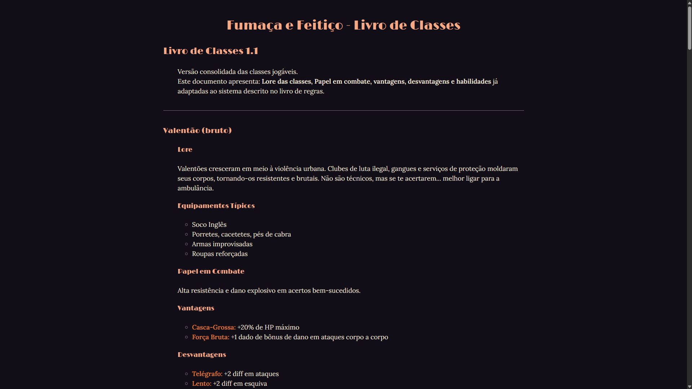

Practis

Ambiente Linux personalizado, desenvolvido com foco em identidade visual, funcionalidade e experiência de uso. Um projeto pessoal de experimentação, aprendizado e construção de um ambiente que reflita minhas preferências.
logo
Alguns projetos, experimentos e coisas que venho desenvolvendo
Ambiente Linux personalizado, desenvolvido com foco em identidade visual, funcionalidade e experiência de uso. Um projeto pessoal de experimentação, aprendizado e construção de um ambiente que reflita minhas preferências.

RPG de mesa autoral ambientado em um mundo onde magia e cotidiano coexistem. O projeto também conta com um site desenvolvido para organizar seu universo, apresentar seu conteúdo e servir de referência para jogadores e mestres.